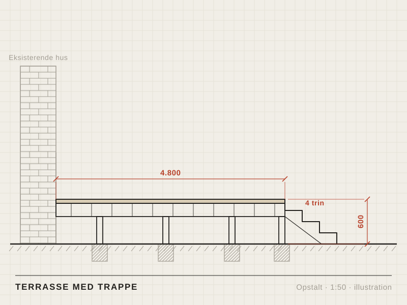
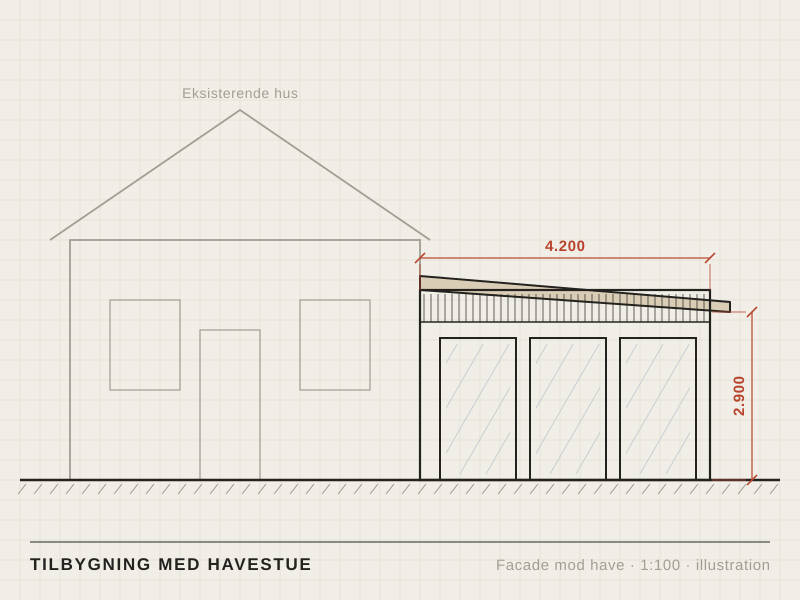
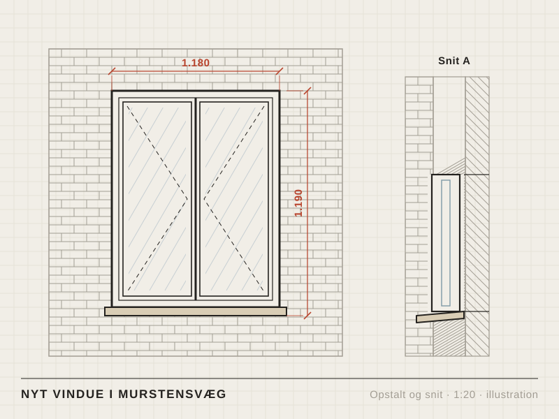
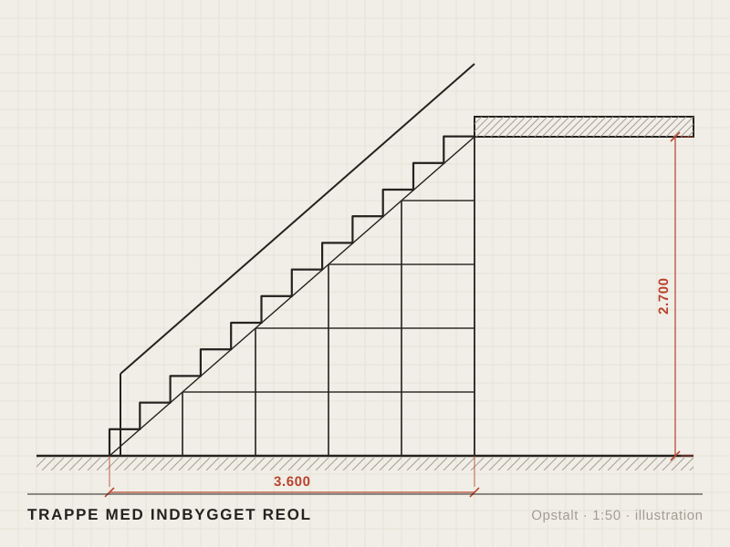
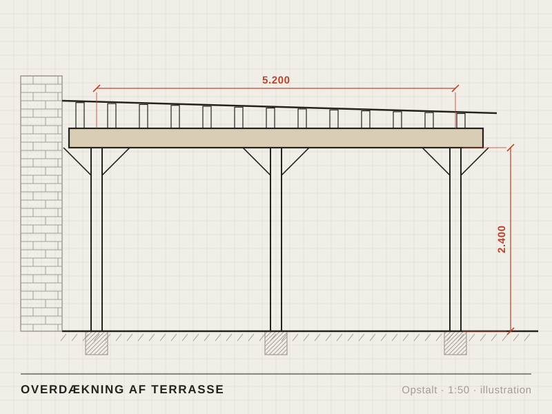
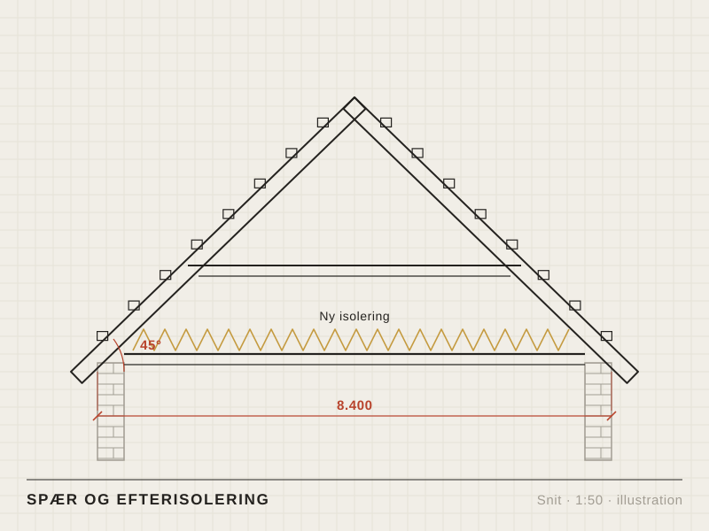

Forside / Typiske opgaver
Typiske opgaver
Seks tegninger af den slags opgaver, vi laver. Tegningerne er eksempler, ikke rigtige kunders huse. På jeres egen side kommer der fotos af jeres arbejde her.
-

Terrasse Terrasse med trappe
Terrasse i husets bredde, 600 mm over terræn, med fire trin ned til plænen.
-

Tilbygning Tilbygning med havestue
Havestue på 4,2 meter med ensidig taghældning og tre store glaspartier.
-

Vinduer Nyt vindue i murstensvæg
Nyt vindue med to sidehængte rammer i en eksisterende murstensvæg.
-

Indvendigt Trappe med indbygget reol
Trappe til første sal med åbne reoler bygget ind under trinene.
-

Terrasse Overdækning af terrasse
Overdækning op ad huset med tre stolper, limtræsbjælke og tæt tag.
-

Tag Spær og efterisolering
Spær med hanebånd og ny isolering på loftet, set i snit.
Har du en lignende opgave?
Skriv kort, hvad du vil have lavet, og send gerne et billede. Vi ringer dig op inden for to hverdage.